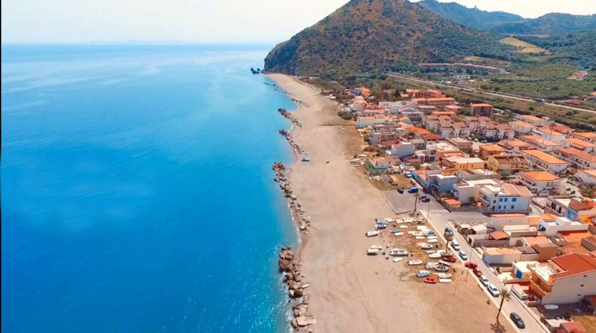

Ci troviamo a Mongiove, una splendida frazione di Patti, in provincia di Messina. Vieni a trovarci e scopri le deliziose pizze e piatti del nostro ristorante.
Indirizzo: Via Messina, 3, 98066 Mongiove ME
Goditi una cena in riva al mare, ecco alcune foto!
Scopri la nostra selezione di birre locali e classiche.
Dopo una deliziosa cena, goditi una passeggiata sulla nostra spiaggia privata a pochi passi dal ristorante. Un luogo perfetto per rilassarsi con vista sul mare.
Offriamo anche i seguenti servizi:
